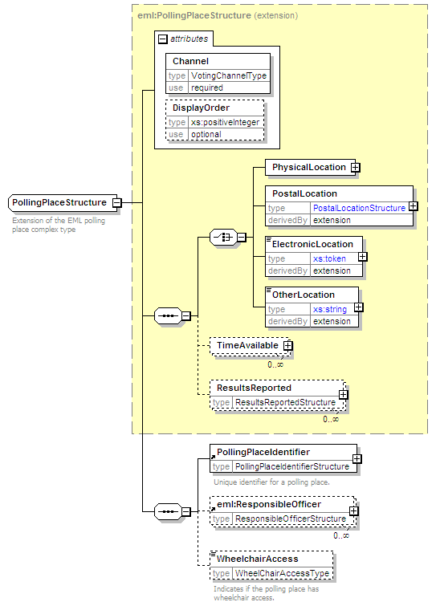
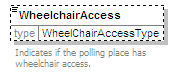

| diagram |  | ||||||||||||||||||
| namespace | http://www.aec.gov.au/xml/schema/mediafeed | ||||||||||||||||||
| type | extension of PollingPlaceStructure | ||||||||||||||||||
| properties |
|
||||||||||||||||||
| children | PhysicalLocation PostalLocation ElectronicLocation OtherLocation TimeAvailable ResultsReported PollingPlaceIdentifier ResponsibleOfficer WheelchairAccess | ||||||||||||||||||
| used by |
|
||||||||||||||||||
| attributes |
|
||||||||||||||||||
| annotation |
|
||||||||||||||||||
| source | <xs:complexType name="PollingPlaceStructure"> <xs:annotation> <xs:documentation>Extension of the EML polling place complex type</xs:documentation> </xs:annotation> <xs:complexContent> <xs:extension base="eml:PollingPlaceStructure"> <xs:sequence> <xs:element ref="PollingPlaceIdentifier"/> <xs:element ref="eml:ResponsibleOfficer" minOccurs="0" maxOccurs="unbounded"/> <xs:element name="WheelchairAccess" type="WheelChairAccessType" minOccurs="0"> <xs:annotation> <xs:documentation>Indicates if the polling place has wheelchair access.</xs:documentation> </xs:annotation> </xs:element> </xs:sequence> </xs:extension> </xs:complexContent> </xs:complexType> |
| diagram |  | |||||||||||||||
| namespace | http://www.aec.gov.au/xml/schema/mediafeed | |||||||||||||||
| type | WheelChairAccessType | |||||||||||||||
| properties |
|
|||||||||||||||
| facets |
|
|||||||||||||||
| annotation |
|
|||||||||||||||
| source | <xs:element name="WheelchairAccess" type="WheelChairAccessType" minOccurs="0"> <xs:annotation> <xs:documentation>Indicates if the polling place has wheelchair access.</xs:documentation> </xs:annotation> </xs:element> |